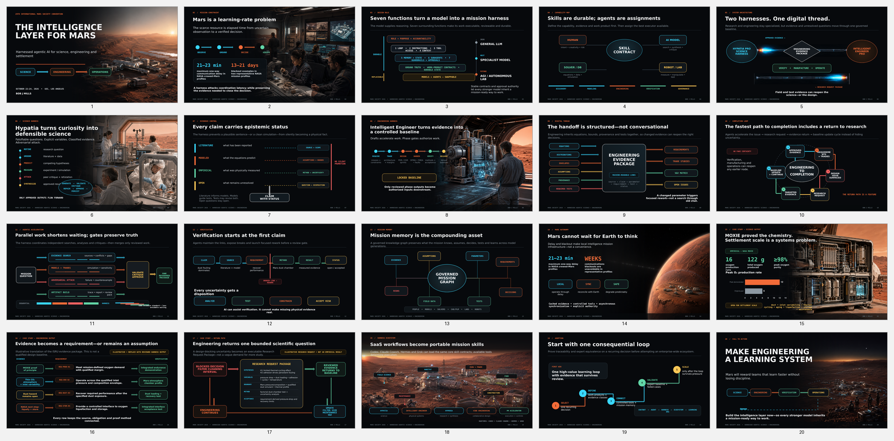

Research
Synthesize sources, rank hypotheses, expose uncertainty, and define discriminating measurements.
A staged system of specialist AI harnesses that converts evidence into accountable science, engineered systems, verified decisions, and completed mission work—with tools, durable memory, guardrails, and human authority.
The harness creates an integrated first-pass concept package in hours. It does not compress physical testing, qualification, certification, or mission acceptance into hours.
Synthesize sources, rank hypotheses, expose uncertainty, and define discriminating measurements.
Translate validated knowledge into requirements, interfaces, trades, analyses, and verification plans.
Return conflicts, missing evidence, failed assumptions, and unresolved risks to targeted inquiry.
Revise the configuration, close requirements, execute verification, and preserve the decision record.
Specialists share typed work products, provenance, memory, and promotion gates. Each cycle starts with the best validated state instead of rebuilding context.
The harness progresses only when a typed work product satisfies its promotion contract.
Rank hypotheses, synthesize sources, and label every consequential claim as Observed, Derived, Assumed, or Unknown.
How does the agent plan, act, inspect, and iterate?
What role, purpose, policies, and definition of done govern it?
Which actions can it actually execute, and with what permissions?
What evidence enters the current decision window?
What durable facts, decisions, versions, and checkpoints persist?
Which specialist roles can be delegated bounded work?
What is blocked, reviewed, escalated, or reversible?
The Mission Harness Director assigns work to domain leads. Each lead may spawn bounded specialist agents—and those agents may spawn narrower experts—without expanding authority or escaping evidence, cost, depth, and approval limits.
Owns the question, evidence plan, hypotheses, experiments, uncertainty, review, and Engineering Evidence Package.
Owns the controlled technical baseline from ConOps through verification, release, manufacturing, and operations readiness.
Owns authorized scope, integrated execution, performance measurement, governance, change, and closeout.
What this case study tests: NASA’s MOXIE demonstrated that oxygen can be produced from the Martian atmosphere at gram scale. This case study asks what it would take to scale that achievement into a complete oxygen system producing many tonnes: enough life-support oxygen for a 12-person habitat over two years, plus the liquid-oxygen oxidizer needed to refuel a spacecraft for its return to Earth. MOXIE’s results are observed evidence; the large-scale mission target and plant design are modeled concepts that still require engineering validation.
NASA reports 16 oxygen-producing runs, 122 g total output, a peak of 12 g/h, and oxygen purity of at least 98%. These are observed demonstration facts. The crew-scale concept uses solid-oxide carbon-dioxide electrolysis, but its scale-up values remain modeled outputs—not flight-qualified performance.
Scenario figures require the calculation references and assumptions documented in the case-study and claims-ledger files.
Codex, Claude Cowork, Hermes, and Grok map native capabilities to the same loop, evidence model, approval gates, and durable-state contract.
View the source, adapt the capability map, test with the MOXIE packet, and fail closed when a runtime lacks a required tool.
Route a mission objective through staged specialist harnesses, enforce work-product contracts, and evolve the process from validated outcomes.
Emulate a research SaaS workflow for evidence-aware scientific inquiry, hypothesis ranking, and experiment design.
Emulate a research-synthesis SaaS application by turning heterogeneous sources into traceable findings and decision-ready briefs.
Emulate an engineering SaaS workflow that converts validated requirements into options, analyses, verification plans, and configuration-controlled outputs.
Emulate collaborative build SaaS while keeping rapid ideation inside executable specifications, review gates, and reproducible handoffs.
Validate claims and work products against authoritative evidence, acceptance criteria, and independent checks before stage promotion.
Emulate a project-management SaaS application by converting approved decisions into owned work, dependencies, reviews, and measurable delivery state.
Maintain durable, auditable mission memory with versioned facts, decisions, state transitions, provenance, retention, and review dates.
Corrected terminology, explicit modeled-scenario labels, aligned speaker notes, a deeper research-to-engineering loop, and five conclusions each for science, engineering, and project management.

Download the complete package or choose individual presentation, documentation, case-study, and mind-map files.